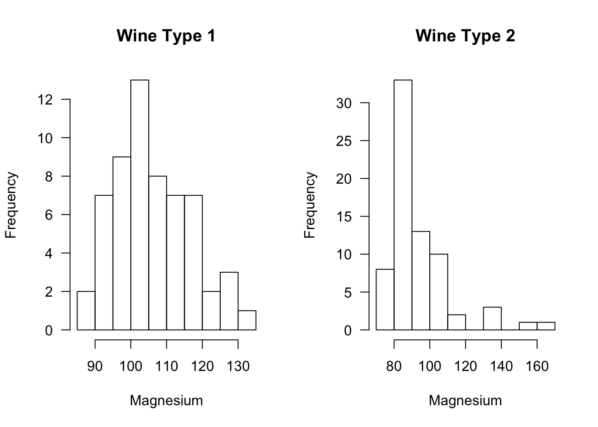

Chapter 3 Rank and Sign Statistics
3.1 Ranks
3.1.1 Definition
- Suppose we have \(n\) observations \(\mathbf{X} = (X_{1}, \ldots, X_{n})\). The rank \(R_{i}\) of the \(i^{th}\) observation is defined as \[\begin{equation} R_{i} = R_{i}(\mathbf{X}) = \sum_{j=1}^{n} I( X_{i} \geq X_{j}) \tag{3.1} \end{equation}\] where \[\begin{equation} I(X_{i} \geq X_{j}) = \begin{cases} 1 & \text{ if } X_{i} \geq X_{j} \\ 0 & \text{ if } X_{i} < X_{j} \end{cases} \end{equation}\]
The largest observation has a rank of \(n\).
The smallest observation has a rank of \(1\) (if there are no ties).
I am using the notation \(R_{i}(\mathbf{X})\) to emphasize that the rank of the \(i^{th}\) observations depends on the entire vector of observations rather than only on the value of \(X_{i}\).
You can compute ranks in R using the rank function:
## [1] 2 4 1 5 33.1.2 Handling Ties
In the definition of ranks shown in (3.1), tied observations receive their maximum possible rank.
For example, suppose that \((X_{1}, X_{2}, X_{3}, X_{4}) = (0, 1, 1, 2)\). In this case, one could argue whether both observations 2 and 3 should be ranked \(2^{nd}\) or \(3^{rd}\) while observations \(1\) and \(4\) should unambiguously receive ranks of \(1\) and \(4\) respectively.
Under definition (3.1), both observations \(2\) and \(3\) receive a rank of \(3\).
In R, handling ties in a way that is consistent with definition (3.1) is done using the ties.method = “max” argument
## [1] 1 3 3 4- The default in R is to replace the ranks of tied observations with their “average” rank
## [1] 1.0 2.5 2.5 4.0- As another example of the “average” definition of ranks, consider the following example:
## [1] 3 7 6 6 4 3 1## [1] 2.5 7.0 5.5 5.5 4.0 2.5 1.0When defining ranks using the “average” or “midrank” approach to handling ties, we replace tied ranks with the average of the two “adjacent” ranks.
For example, if we have a vector of ranks \((R_{1}, R_{2}, R_{3}, R_{4})\) where \(R_{2} = R_{3} =3\) and \(R_{1} = 4\) and \(R_{4} = 1\), then the vector of modified ranks using the “average” approach to handling ties would be \[\begin{equation} (R_{1}', R_{2}', R_{3}', R_{4}') = \Big( 4, \frac{4 + 1}{2}, \frac{4 + 1}{2}, 1 \Big) \end{equation}\]
The “average” approach is the most common way of handling ties when computing the Wilcoxon rank sum statistic.
3.1.3 Properties of Ranks
Suppose \((X_{1}, \ldots, X_{n})\) is random sample from a continuous distribution \(F\) (so that the probability of ties is zero). Then, the following properties hold for the associated ranks \(R_{1}, \ldots, R_{n}\).
- Each \(R_{i}\) follows a discrete uniform distribution \[\begin{equation} P(R_{i} = j) = 1/n, \quad \text{for any } j = 1, \ldots,n. \end{equation}\]
- The expectation of \(R_{i}\) is \[\begin{equation} E( R_{i} ) = \sum_{j=1}^{n} j P(R_{i} = j) = \frac{1}{n}\sum_{j=1}^{n} j = \frac{(n+1)}{2} \tag{3.2} \end{equation}\]
- The variance of \(R_{i}\) is \[\begin{equation} \text{Var}( R_{i} ) = E( R_{i}^{2} ) - E(R_{i})^{2} = \frac{1}{n}\sum_{j=1}^{n} j^{2} - \Big( \frac{n+1}{2} \Big)^{2} = \frac{ n^{2} - 1}{12} \end{equation}\]
- The random variables \(R_{1}, \ldots, R_{n}\) are not independent (why?). However, the vector \(\mathbf{R}_{n} = (R_{1}, \ldots, R_{n})\) is uniformly distributed on the set of \(n!\) permutations of \((1,2,\ldots,n)\).
3.2 The Wilcoxon Rank Sum (WRS) Test: A Two-Sample Test
3.2.1 Goal of the Test
The Wilcoxon Rank Sum (WRS) test (sometimes referred to as the Wilcoxon-Mann-Whitney test) is a popular, rank-based two-sample test.
The one-sided WRS test is used to test whether or not observations from one group tend to be larger (or smaller) than observations from the other group.
Suppose we have observations from two groups: \(X_{1}, \ldots, X_{n} \sim F_{X}\) and \(Y_{1}, \ldots, Y_{m} \sim F_{Y}\).
Roughly speaking, the one-sided WRS tests the following hypothesis \[\begin{eqnarray} H_{0}: && F_{X} = F_{Y} \quad \textrm{ versus } \\ H_{A}: && \textrm{Observations from } F_{X} \textrm{ tend to be larger than observations from } F_{Y} \nonumber \tag{3.3} \end{eqnarray}\]
What is meant by “tend to be larger” in the alternative hypothesis?
- Two common ways of stating the alternative hypothesis for the WRS include
- The stochastic dominance alternative \[\begin{eqnarray} H_{0}: & & F_{X} = F_{Y} \quad \textrm{ versus } \nonumber \\ H_{A}: & & F_{X} \textrm{ is stochastically larger than } F_{Y} \tag{3.4} \end{eqnarray}\]
- The “shift” alternative \[\begin{eqnarray} H_{0}: & & F_{X} = F_{Y} \quad \textrm{ versus } \nonumber \\ H_{A}: & & F_{X}(t) = F_{Y}(t - \Delta), \Delta > 0. \tag{3.5} \end{eqnarray}\]
A distribution function \(F_{X}\) is said to be stochastically larger than \(F_{Y}\) if \(F_{X}(t) \leq F_{Y}(t)\) for all \(t\) with \(F_{X}(t) < F_{Y}(t)\) for at least one value of \(t\).
Note that the “shift alternative” implies stochastic dominance.
Why do we need to specify an alternative?
It is often stated that the WRS test is a test of equal medians.
This is true under the assumption that the relevant alternative is of the form \(F_{X}(t) = F_{Y}(t - \Delta)\).
However, one could have a scenario where the two groups have equal medians, but the WRS test has a very high probability of rejecting \(H_{0}\).
In addition, in many applications, it is difficult to justify that the “shift alternative” is a reasonable assumption.
An alternative is to view the WRS test as performing the following hypothesis test: \[\begin{eqnarray} H_{0}: && P(X_{i} > Y_{j}) + \tfrac{1}{2}P(X_{i} = Y_{j}) = 1/2 \quad \textrm{ versus } \nonumber \\ H_{A}: && P(X_{i} > Y_{j}) + \tfrac{1}{2}P(X_{i} = Y_{j}) > 1/2 \tag{3.6} \end{eqnarray}\] See Divine et al. (2018) for more discussion around this formulation of the WRS test.
The hypothesis test (3.6) makes fewer assumptions about how \(F_{X}\) and \(F_{Y}\) are related and is, in many cases, more interpretable.
For example, in medical applications, it is often more natural to answer the question: what is the probability that the outcome under treatment 1 is better than the outcome under treatment 2.
The justification of hypothesis test (3.6) comes through the close connection between the WRS test statistic \(W\) and the Mann-Whitney statistic \(M\). Specifically, \(W = M + n(n+1)/2\). (Although, often \(M\) is defined as \(M = mn + n(n+1)/2 - W\)).
The Mann-Whitney statistic divided by \(mn\) is an estimate of the probability: \[\begin{equation} P(X_{i} > Y_{j}) + \tfrac{1}{2}P(X_{i} = Y_{j}) = 1/2. \nonumber \end{equation}\]
The reason for stating \(H_{0}\) in (3.6) as \[\begin{equation} H_{0}: P(X_{i} > Y_{j}) + \tfrac{1}{2}P(X_{i} = Y_{j}) = 1/2 \nonumber \\ \end{equation}\] is to cover the case of either a continuous or discrete distribution.
When both \(X_{i}\) and \(Y_{j}\) are samples from a continuous distribution we will have \(P(X_{i} = Y_{j}) = 0\), and we should then think of the null hypothesis as \(H_{0}: P(X_{i} > Y_{j})\).
For the case when both \(X_{i}\) and \(Y_{j}\) have a discrete distribution, consider an example where \(X_{i}\) and \(Y_{j}\) have the same discrete distribution with probabilities \(P(X_{i} = 0) = p_{0}, P(X_{i} = 1) = p_{1}\), and \(P(X_{i} = 2) = 1 - p_{0} - p_{2}\).
With this common discrete distribution on \(\{0, 1, 2\}\), we can see that \(P(X_{i} > Y_{j}) + \tfrac{1}{2}P(X_{i} = Y_{j}) = 1/2\) because \[\begin{eqnarray} P(X_{i} > Y_{j}) + \frac{1}{2}P(X_{i} = Y_{j}&)& = P(X_{i}=1, Y_{j}=0) + P(X_{i} = 2, Y_{j}=0) + P(X_{i}=2, Y_{j}=1) \nonumber \\ &+& \frac{1}{2}\Big[P(X_{i}=0, Y_{j}=0) + P(X_{i} = 1, Y_{j}=1) + P(X_{i}=2, Y_{j}=2) \Big] \nonumber \\ &=& p_{1}p_{0} + (1 - p_{1} - p_{0})p_{0} + (1 - p_{1} - p_{0})p_{1} \nonumber \\ &+& p_{0}^{2} + p_{1}^{2} + \frac{1}{2} - p_{0} - p_{1} + p_{0}p_{1} \nonumber \\ &=& 1/2 \nonumber \end{eqnarray}\]
3.2.2 Definition of the WRS Test Statistic
The WRS test statistic is based on computing the sum of ranks (ranks based on the pooled sample) in one group.
The motivation for the WRS test statistic is the following: if observations from group 1 tend to be larger than those from group 2, the average rank from group 1 should exceed the average rank from group 2.
A sufficiently large value of the average rank from group 1 will allow us to reject \(H_{0}\) in favor of \(H_{A}\).
We will define the pooled data vector \(\mathbf{Z}\) as \[\begin{equation} \mathbf{Z} = (X_{1}, \ldots, X_{n}, Y_{1}, \ldots, Y_{m}) \nonumber \end{equation}\] This is a vector with length \(n + m\).
The Wilcoxon rank-sum test statistic \(W\) for testing hypotheses of the form (3.3) is then defined as \[\begin{equation} W = \sum_{i=1}^{n} R_{i}( \mathbf{Z} ) \tag{3.7} \end{equation}\]
In other words, the WRS test statistic is the sum of the ranks for those observations coming from group 1 (i.e., the group with the \(X_{i}\) as observations).
If the group 1 observations tend to, in fact, be larger than the group 2 observations, then we should expect the sum of the ranks in this group to be larger than the sum of the ranks from group 2.
Under \(H_{0}\), we can treat both \(X_{i}\) and \(Y_{i}\) as being observations coming from a common distribution function \(F\).
Hence, the expectation of \(R_{i}(\mathbf{Z})\) under the null hypothesis is \[\begin{equation} E_{H_{0}}\{ R_{i}(\mathbf{Z}) \} = \frac{n + m + 1}{2} \nonumber \end{equation}\] and thus the expectation of \(W\) under \(H_{0}\) \[\begin{equation} E_{H_{0}}( W ) = \sum_{i=1}^{n} E_{H_{0}}\{ R_{i}( \mathbf{Z} ) \} \nonumber = \frac{ n(n + m + 1) }{ 2 } \end{equation}\]
It can be shown that the variance of \(W\) under the null hypothesis is \[\begin{equation} \textrm{Var}_{H_{0}}( W ) = \frac{mn(m + n + 1)}{12} \nonumber \end{equation}\]
3.2.3 Computing p-values for the WRS Test
Exact Distribution
The p-value for the WRS test is found by computing the probability \[\begin{equation} \textrm{p-value} = P_{H_{0}}( W \geq w_{obs}) \end{equation}\] where \(w_{obs}\) is the observed WRS test statistic that we get from our data.
Computing p-values for the WRS test requires us to work with the null distribution of \(W\). That is, the distribution of \(W\) under the assumption that \(F_{X} = F_{Y}\).
The exact null distribution is found by using the fact that each possible ordering of the ranks has the same probability. That is, \[\begin{equation} P\{ R_{1}(\mathbf{Z}) = r_{1}, \ldots, R_{n+m}(\mathbf{Z}) = r_{n+m} \} = \frac{1}{(n + m)!}, \end{equation}\] where \((r_{1}, \ldots, r_{n+m})\) is any permutation of the set \(\{1, 2, \ldots, n + m\}\). Note that the null distribution only depends on \(n\) and \(m\).
Also, there are \({n + m \choose n}\) possible ways to assign distinct ranks to group 1.
Consider an example with \(n = m = 2\). In this case, there are \({4 \choose 2} = 6\) distinct ways to assign 2 ranks to group 1. What is the null distribution of the WRS test statistic? Try to verify that \[\begin{eqnarray} P_{H_{0}}( W = 7) &=& 1/6 \nonumber \\ P_{H_{0}}( W = 6 ) &=& 1/6 \nonumber \\ P_{H_{0}}(W = 5) &=& 1/3 \nonumber \\ P_{H_{0}}( W = 4 ) &=& 1/6 \nonumber \\ P_{H_{0}}(W = 3) &=& 1/6. \nonumber \end{eqnarray}\]
Large-Sample Approximate Distribution
Looking at (3.7), we can see that the WRS test statistic is a sum of nearly independent random variables (at least nearly independent for large \(n\) and \(m\)).
Thus, we can expect that an appropriately centered and scaled version of \(W\) should be approximately Normally distributed (recall the Central Limit Theorem).
The standardized version \(\tilde{W}\) of the WRS is defined as \[\begin{equation} \tilde{W} = \frac{W - E_{H_{0}}(W)}{ \sqrt{\textrm{Var}_{H_{0}}(W) } } = \frac{W - n(n+m+1)/2}{ \sqrt{ mn(n + m + 1)/12 } } \end{equation}\]
Under \(H_{0}\), \(\tilde{W}\) converges in distribution to a Normal\((0,1)\) random variable.
A p-value using this large-sample approximation would then be computed in the following way \[\begin{eqnarray} \textrm{p-value} &=& P_{H_{0}}( W \geq w_{obs}) = P\Bigg( \frac{W - n(n+m+1)/2}{ \sqrt{ mn(n + m + 1)/12 } } \geq \frac{w_{obs} - n(n+m+1)/2}{ \sqrt{ mn(n + m + 1)/12 } }\Bigg) \nonumber \\ &=& P_{H_{0}}\Big( \tilde{W} \geq \frac{w_{obs} - n(n+m+1)/2}{ \sqrt{ mn(n + m + 1)/12 } }\Big) = 1 - \Phi\Bigg( \frac{w_{obs} - n(n+m+1)/2}{ \sqrt{ mn(n + m + 1)/12 } } \Bigg), \nonumber \end{eqnarray}\] where \(\Phi(t)\) denotes the cumulative distribution function of a standard Normal random variable.
Often, in practice, a continuity correction is applied when using this large-sample approximation. For example, we would compute the probability \(P_{H_{0}}(W \geq w_{obs} - 0.5)\) with the Normal approximation rather than \(P_{H_{0}}(W \geq w_{obs})\) directly.
Many statistical software packages (including R) will not compute p-values using the exact distribution in the presence of ties.
The coin package in R does allow you to perform a permutation test in the presence of ties.
A “two-sided” Wilcoxon rank sum test can also be performed. The two-sided hypothesis tests could either be stated as \[\begin{eqnarray} H_{0}: & & F_{X} = F_{Y} \quad \textrm{ versus } \nonumber \\ H_{A}: & & F_{X} \textrm{ is stochastically larger or smaller than } F_{Y} \nonumber \end{eqnarray}\] or \[\begin{eqnarray} H_{0}: & & F_{X} = F_{Y} \quad \textrm{ versus } \nonumber \\ H_{A}: & & F_{X}(t) = F_{Y}(t - \Delta), \Delta \neq 0. \nonumber \end{eqnarray}\] or \[\begin{eqnarray} H_{0}: && P(X_{i} > Y_{i}) + \tfrac{1}{2}P(X_{i} = Y_{i}) = 1/2 \quad \textrm{ versus } \nonumber \\ H_{A}: && P(X_{i} > Y_{i}) + \tfrac{1}{2}P(X_{i} = Y_{i}) \neq 1/2 \nonumber \end{eqnarray}\]
3.2.4 Computing the WRS test in R
- To illustrate performing the WRS test in R, we can use the wine dataset from the rattle.data package. This dataset is also available from the UCI Machine Learning Repository.
## Type Alcohol Malic Ash Alcalinity Magnesium Phenols Flavanoids Nonflavanoids
## 1 1 14.23 1.71 2.43 15.6 127 2.80 3.06 0.28
## 2 1 13.20 1.78 2.14 11.2 100 2.65 2.76 0.26
## 3 1 13.16 2.36 2.67 18.6 101 2.80 3.24 0.30
## 4 1 14.37 1.95 2.50 16.8 113 3.85 3.49 0.24
## 5 1 13.24 2.59 2.87 21.0 118 2.80 2.69 0.39
## 6 1 14.20 1.76 2.45 15.2 112 3.27 3.39 0.34
## Proanthocyanins Color Hue Dilution Proline
## 1 2.29 5.64 1.04 3.92 1065
## 2 1.28 4.38 1.05 3.40 1050
## 3 2.81 5.68 1.03 3.17 1185
## 4 2.18 7.80 0.86 3.45 1480
## 5 1.82 4.32 1.04 2.93 735
## 6 1.97 6.75 1.05 2.85 1450- This dataset contains three types of wine. We will only consider the first two.
Let us consider the difference in the level of magnesium across the two types of wine. 

Suppose we are interested in testing whether or not magnesium levels in Type 1 wine are generally larger than magnesium levels in Type 2 wine. This can be done with the following code
wilcox.test(x=wine2$Magnesium[wine2$Type==1], y=wine2$Magnesium[wine2$Type==2],
alternative="greater")##
## Wilcoxon rank sum test with continuity correction
##
## data: wine2$Magnesium[wine2$Type == 1] and wine2$Magnesium[wine2$Type == 2]
## W = 3381.5, p-value = 8.71e-10
## alternative hypothesis: true location shift is greater than 0- You could also use the following code to perform this test (just be careful about the ordering of the levels of Type)
##
## Wilcoxon rank sum test with continuity correction
##
## data: Magnesium by Type
## W = 3381.5, p-value = 8.71e-10
## alternative hypothesis: true location shift is greater than 0- What is the value of the WRS test statistic? We can code this directly with the following steps:
W <- wilcox.test(x=wine2$Magnesium[wine2$Type==1], y=wine2$Magnesium[wine2$Type==2])
n <- sum(wine2$Type==1)
m <- sum(wine2$Type==2)
zz <- rank(wine2$Magnesium) ## vector of pooled ranks
sum(zz[wine2$Type==1]) ## The WRS test statistic## [1] 5151.5- The statistic returned by the wilcox.test function is actually equal to \(W - n(n+1)/2\) not \(W\)
## [1] 3381.5## W
## 3381.5- \(\{ W - n(n+1)/2 \}\) is equal to the Mann-Whitney statistic. Thus, W$statistic/(mn) is an estimate of the probability \(P(X_{i} > Y_{j}) + P(X_{i} = Y_{j})/2\).
## W
## 0.8072332- Let’s check how the Mann-Whitney statistic matches a simulation-based estimate of this probability
ind1 <- which(wine2$Type==1)
ind2 <- which(wine2$Type==2)
xgreater <- rep(0, 100)
for(k in 1:100) {
xi <- sample(ind1, size=1)
yi <- sample(ind2, size=1)
xgreater[k] <- ifelse(wine2$Magnesium[xi] > wine2$Magnesium[yi], 1, 0) +
ifelse(wine2$Magnesium[xi] == wine2$Magnesium[yi], 1/2, 0)
}
mean(xgreater) ## estimate of this probability## [1] 0.805- This simulation-based estimate of \(P(X_{i} > Y_{j}) + P(X_{i} = Y_{j})/2\) is quite close to the value of the Mann-Whitney statistic divided by \(mn\).
3.2.5 Additional Notes for the WRS test
3.2.5.1 Comparing Ordinal Data
The WRS test is often suggested when comparing categorical data which are ordinal.
- For example, we might have 4 categories:
- Poor
- Fair
- Good
- Excellent
In this case, there is a natural ordering of the categories but any numerical values assigned to these categories would be arbitrary.
In such cases, we might be interested in testing whether or not outcomes tend to be better in one group than the other rather than simply comparing whether or not the distribution is different between the two groups.
A WRS test is useful here since we can still compute ranks without having to choose aribtrary numbers for each category.
Thinking of the “probability greater than alternative (3.6)” or “stochastically larger than alternative (3.4)” interpretation of the WRS test is probably more reasonable than the “shift alternative (3.5)” interpretation.
Note that there will probably be many ties when comparing ordinal data.
3.2.5.2 The Hodges-Lehmann Estimator
The Hodges-Lehmann Estimator \(\hat{\Delta}\) is an estimator of \(\Delta\) in the location-shift model \[\begin{equation} F_{X}(t) = F_{Y}(t - \Delta) \nonumber \end{equation}\]
The Hodges-Lehmann is defined as the median difference among all possible (group 1, group 2) pairs. Specifically, \[\begin{equation} \hat{\Delta} = \textrm{median}\{ (X_{i} - Y_{j}); i=1,\ldots,n; j=1,\ldots,m \} \nonumber \end{equation}\]
We won’t discuss the Hodges-Lehmann estimator in detail in this course, but in many statistical software packages, the Hodges-Lehmann is often reported when computing the WRS test.
In R, the Hodges-Lehmann estimator can be obtained by using the conf.int=TRUE argument in the wilcox.test function
WC <- wilcox.test(x=wine2$Magnesium[wine2$Type==1], y=wine2$Magnesium[wine2$Type==2],
conf.int=TRUE)
WC$estimate ## The Hodges-Lehmann estimate## difference in location
## 14.000053.3 One Sample Tests
3.3.1 The Sign Test
3.3.1.1 Motivation and Definition
The sign test can be thought of as a test of whether or not the median of a distribution is greater than zero (or greater than some other fixed value \(\theta_{0}\)).
- Frequently, the sign test is applied in the following context:
- Suppose we have observations \(D_{1}, \ldots, D_{n}\) which arise from the model \[\begin{equation} D_{i} = \theta + \varepsilon_{i}, \tag{3.8} \end{equation}\] where \(\varepsilon_{i}\) are iid random variables each with distribution function \(F_{\epsilon}\) that is assumed to have a median of zero. Moreover, we will assume the density function \(f_{\varepsilon}(t)\) of \(\varepsilon_{i}\) is symmetric around zero.
The distribution function of \(D_{i}\) is then \[\begin{equation} F_{D}(t) = P(D_{i} \leq t) = P(\varepsilon_{i} \leq t - \theta) = F_{\epsilon}(t - \theta) \end{equation}\]
Likewise, the density function \(f_{D}(t)\) of \(D_{i}\) is given by \[\begin{equation} f_{D}(t) = f_{\epsilon}(t - \theta) \end{equation}\]
In this context, \(\theta\) is usually referred to as a location parameter.
The goal here is to test \(H_{0}: \theta = \theta_{0}\) vs. \(H_{A}: \theta > \theta_{0}\). (Often, \(\theta_{0} = 0\)).
- This sort of test usually comes up in the context of paired data.
Common examples include
- patients compared “pre and post treatment”
- students before and after the introduction of a new teaching method
- comparison of “matched” individuals who are similar (e.g., same age, sex, education, etc.)
- comparing consistency of measurements made on the same objects
| Baseline_Measure | Post_Treatment_Measure | |
|---|---|---|
| Patient 1 | Y1 | X1 |
| Patient 2 | Y2 | X2 |
| Patient 3 | Y3 | X3 |
| Patient 4 | Y4 | X4 |
In such cases, we have observations \(X_{i}\) and \(Y_{i}\) for \(i = 1,\ldots n\) where it is not necessarily reasonable to think of \(X_{i}\) and \(Y_{i}\) as independent.
We can define \(D_{i} = X_{i} - Y_{i}\) as the difference in the \(i^{th}\) pair.
With this setup, a natural question is whether or not the differences \(D_{i}\) tend to be greater than zero or not.
The sign statistic \(S_{n}\) is defined as \[\begin{equation} S_{n} = \sum_{i=1}^{n} I( D_{i} > 0) \tag{3.9} \end{equation}\]
If the null hypothesis \(H_{0}: \theta = 0\) is true, then we should expect that roughly half of the observations will be positive.
This suggests that we will reject \(H_{0}\) if \(S_{n} \geq c\), where \(c\) is a number that is greater than \(n/2\).
3.3.1.2 Null Distribution and p-values for the Sign Test
Notice that the sign statistic defined in (3.9) is the sum of independent Bernoulli random variable.
That is, we can think of \(Z_{i} = I(D_{i} > 0)\) as a random variable with success probability \(p( \theta )\) where the formula for \(p( \theta )\) is \[\begin{equation} p(\theta) = P(Z_{i} = 1) = P(D_{i} > 0) = 1 - F_{D}(0) = 1 - F_{\epsilon}( -\theta ) \nonumber \end{equation}\]
This implies that \(S_{n}\) is a binomial random variable with \(n\) trials and success probability \(p(\theta)\). That is, \[\begin{equation} S_{n} \sim \textrm{Binomial}(n, p(\theta) ) \tag{3.10} \end{equation}\]
Because \(p(0) = 1/2\), \(S_{n} \sim \textrm{Binomial}(n, 1/2 )\) under \(H_{0}\).
Notice that the “null distribution” of the sign statistic is “distribution free” in the sense that the null distribution of \(S_{n}\) does not depend on the distribution of \(D_{i}\).
The p-value for the one-sided sign test can be computed by \[\begin{equation} \textrm{p-value} = P_{H_{0}}(S_{n} \geq s_{obs}) = \sum_{j=s_{obs}}^{n} P_{H_{0}}(S_{n} = j) = \sum_{j=s_{obs}}^{n} {n \choose j} \frac{1}{2^{n}}, \nonumber \end{equation}\] where \(s_{obs}\) is the observed value of the sign statistic.
### How to compute the p-value for the sign test using R
xx <- rnorm(100)
sign.stat <- sum(xx > 0) ## This is the value of the sign statistic
1 - pbinom(sign.stat - 1, size=100, prob=1/2) ## p-value for sign test## [1] 0.6178233The reason that this is the right expression using R is that for any positive integer \(w\) \[\begin{equation} P_{H_{0}}(S_{n} \geq w) = 1 - P_{H_{0}}(S_{n} < w) = 1 - P_{H_{0}}(S_{n} \leq w - 1) \end{equation}\] and the R function pbinom(t, n, prob) computes \(P(X \leq t)\) where \(X\) is a binomial random variable with \(n\) trials and success probability prob.
You can also perform the one-sided sign test by using the binom.test function in R.
## [1] 0.61782333.3.1.3 Two-sided Sign Test
Notice that the number of negative values of \(D_{i}\) can be expressed as \[\begin{equation} \sum_{i=1}^{n} I(D_{i} < 0) = n - S_{n} \end{equation}\] if there are no observations that equal zero exactly. Large value of \(n - S_{n}\) would be used in favor of another possible one-sided alternative \(H_{A}: \theta < 0\).
If we now want to test the two-sided alternative \[\begin{equation} H_{0}: \theta = 0 \quad \textrm{ vs. } \quad H_{A}: \theta \neq 0 \nonumber \end{equation}\] you would need to compute the probability under the null hypothesis of observing a “more extreme” observation than the one that was actually observed.
Extreme is defined by thinking about the fact that we would have rejected \(H_{0}\) if either \(S_{n}\) or \(n - S_{n}\) were very large.
For example, if \(n = 12\), then the expected value of the sign statistic would be \(6\). If \(s_{obs} = 10\), then the collection of “more extreme” events would be \(\leq 2\) or \(\geq 10\).
The two-sided p-value is determined by looking at the tail probabilities on both sides \[\begin{equation} \textrm{p-value} = \begin{cases} P_{H_{0}}(S_{n} \geq s_{obs}) + P_{H_{0}}(S_{n} \leq n - s_{obs}) & \textrm{ if } s_{obs} \geq n/2 \nonumber \\ P_{H_{0}}(S_{n} \leq s_{obs}) + P_{H_{0}}(S_{n} \geq n - s_{obs}) & \textrm{ if } s_{obs} < n/2 \nonumber \end{cases} \end{equation}\]
It actually works out that \[\begin{equation} \textrm{p-value} = \begin{cases} 2 P_{H_{0}}(S_{n} \geq s_{obs}) & \textrm{ if } s_{obs} \geq n/2 \nonumber \\ 2 P_{H_{0}}(S_{n} \leq s_{obs}) & \textrm{ if } s_{obs} < n/2 \nonumber \end{cases} \end{equation}\]
Also, you can note that this p-value would be the same that you would get from performing the test \(H_{0}: p = 1/2\) vs. \(H_{A}: p \neq 1/2\) when it is assumed that \(S_{n} \sim \textrm{Binomial}(n, p)\).
Another note: It is often suggested that one should drop observations which are exactly zero when performing the sign test.
3.3.2 The Wilcoxon Signed Rank Test
The Wilcoxon signed rank test can be applied under the same scenario that we used the sign test.
One criticism of the sign test is that it ignores the magnitude of the observations.
For example, the sign test statistic \(S\) treats observations \(D_{i} = 0.2\) and \(D_{i}=3\) the same.
The Wilcoxon signed rank statistic \(T_{n}\) weights the signs of \(D_{i}\) by the rank of its absolute value.
Specifically, the Wilcoxon signed rank statistic is defined as \[\begin{equation} T_{n} = \sum_{i=1}^{n} \textrm{sign}( D_{i}) R_{i}( |\mathbf{D}| ) \nonumber \end{equation}\] where the \(\textrm{sign}\) function is defined as \[\begin{equation} \textrm{sign}(x) = \begin{cases} 1 & \textrm{if } x > 0 \\ 0 & \textrm{if } x = 0 \\ -1 & \textrm{if } x < 0 \end{cases} \nonumber \end{equation}\]
Here, \(R_{i}( |\mathbf{D}| )\) is the rank of the \(i^{th}\) element from the vector \(|\mathbf{D}| = (|D_{1}|, |D_{2}|, \ldots, |D_{n}|)\).
Intuitively, the Wilcoxon signed rank statistic is measuring whether or not large values of \(|D_{i}|\) tend to be associated with positive vs. negative values of \(D_{i}\).
3.3.2.1 Asymptotic Distribution
As mentioned in the above exercise, the expectation of \(T_{n}\) under \(H_{0}\) is zero.
It can be shown that the variance under the null hypothesis is \[\begin{equation} \textrm{Var}_{H_{0}}( T_{n} ) = \frac{n(2n + 1)(n + 1)}{6} \nonumber \end{equation}\]
Similar, to the large-sample approximation we used for the WRS test, we have the following asymptotic result for the Wilcoxon signed-rank test \[\begin{equation} \frac{T_{n}}{\sqrt{\textrm{Var}_{H_{0}}(T_{n}) }} \longrightarrow \textrm{Normal}(0,1) \quad \textrm{as } n \longrightarrow \infty \nonumber \end{equation}\]
Because the variance of \(T\) is dominated by the term \(n^{3}/3\) for very large \(n\), we could also say that under \(H_{0}\) that \[\begin{equation} \frac{T_{n}}{\sqrt{n^{3}/3} } \longrightarrow \textrm{Normal}(0,1) \quad \textrm{as } n \longrightarrow \infty \end{equation}\] In other words, we can say that \(T_{n}\) has an approximately \(\textrm{Normal}(0, n^{3}/3)\) for large \(n\).
3.3.2.2 Exact Distribution
- The exact distribution of the Wilcoxon signed rank statistic \(T_{n}\) is somewhat more complicated than the exact distribution of the WRS test statistic. Nevertheless, there exists functions in R for working with this exact distribution.
3.3.3 Using R to Perform the Sign and Wilcoxon Tests
Let’s first look at the Meat data from the PairedData R package.
This data set contains 20 observations with each observation corresponding to a single piece of meat. For each observation, we have two measures of fat percentage that were obtained different measuring techniques.
library(PairedData, quietly=TRUE, warn.conflicts=FALSE) ## loading PairedData package
data(Meat) ## loading Meat data
head(Meat)## AOAC Babcock MeatType
## 1 22.0 22.3 Wiener
## 2 22.1 21.8 Wiener
## 3 22.1 22.4 Wiener
## 4 22.2 22.5 Wiener
## 5 24.6 24.9 ChoppedHam
## 6 25.3 25.6 ChooppedPork- Define the differences \(D_{i}\) as the Babcock measurements minus the AOAC measures. We will drop the single observation that equals zero.
DD <- Meat[,2] - Meat[,1]
DD <- DD[DD!=0]
hist(DD, main="Meat Data", xlab="Difference in Measured Fat
Percentage", las=1)
## Min. 1st Qu. Median Mean 3rd Qu. Max.
## -1.60000 -0.25000 0.30000 0.04211 0.40000 1.10000The Sign Test in R
- Let’s first test the hypothesis \(H_{0}: \theta = 0\) vs. \(H_{A}: \theta \neq 0\) using the two-sided sign test. This can be done using the binom.test function
## [1] 0.6476059Wilcoxon Signed Rank Test in R
- You can actually use the function wilcox.test to perform the Wilcoxon signed rank test in addition to the Wilcoxon rank sum test. To perform the Wilcoxon signed rank test in R, you just need to enter data for the x argument and leave the y argument empty.
## Warning in wilcox.test.default(x = DD): cannot compute exact p-value with ties##
## Wilcoxon signed rank test with continuity correction
##
## data: DD
## V = 118.5, p-value = 0.3534
## alternative hypothesis: true location is not equal to 0You will note that the p-value for the Wilcoxon signed rank test is lower than that of the sign test. In general, the Wilcoxon signed rank test is somewhat more “sensitive” than the sign test meaning that it will have a greater tendency to reject \(H_{0}\) for small deviations from \(H_{0}\).
We can explore this sensitivity comparison with a small simulation study. We will consider a scenario where \(D_{i} = 0.4 + \varepsilon_{i}\) with \(\varepsilon_{i}\) having a t distribution with \(3\) degrees of freedom.
set.seed(1327)
n.reps <- 500 ## number of simulation replications
samp.size <- 50 ## the sample size
wilcox.reject <- rep(0, n.reps)
sign.reject <- rep(0, n.reps)
for(k in 1:n.reps) {
dsim <- .4 + rt(samp.size, df=3)
wilcox.reject[k] <- ifelse(wilcox.test(x=dsim)$p.value < 0.05, 1, 0)
sign.reject[k] <- ifelse(binom.test(sum(dsim > 0),
n=samp.size, p=0.5)$p.value < 0.05, 1, 0)
}
mean(wilcox.reject) ## proportion of times Wilcoxon signed rank rejected H0## [1] 0.614## [1] 0.4883.4 Power and Comparisons with Parametric Tests
3.4.1 The Power Function of a Test
The power of a test is the probability that a test rejects the null hypothesis when the alternative hypothesis is true.
The alternative hypothesis \(H_{A}\) is usually characterized by a large range of values of the parameter of interest. For example, \(H_{A}: \theta > 0\) or \(H_{A}: \theta \neq 0\).
For this reason, it is better to think of power as a function that varies across the range of the alternative hypothesis.
To be more precise, we will define the power function as a function of some parameter \(\theta\) where the null hypothesis corresponds to \(\theta = \theta_{0}\) and the alternative hypothesis represents a range of alternative values of \(\theta\).
The power function \(\gamma_{n}(\cdot)\) of a testing procedure is defined as \[\begin{equation} \gamma_{n}(\delta) = P_{\theta=\delta}\{ \textrm{reject } H_{0} \} \qquad \textrm{ for } \delta \in H_{A}. \nonumber \end{equation}\]
The notation \(P_{\theta=\delta}\{ \textrm{reject } H_{0} \}\) means that we are computing this probability under the assumption that the parameter of interest \(\theta\) equals \(\delta\).
The Approximate Power Function of the Sign Test
Let us consider the sign test for testing \(H_{0}: \theta = 0\) vs. \(\theta > 0\).
The sign test is based on the value of the sign statistic \(S_{n}\).
Recalling (3.10), we know that \(S_{n} \sim \textrm{Binomial}(n, p(\theta))\). Hence, \[\begin{equation} \sqrt{n}(\tfrac{S_{n}}{n} - p(\theta)) \longrightarrow \textrm{Normal}\Big( 0, p(\theta)(1 - p(\theta)) \Big) \quad \textrm{as } n \longrightarrow \infty \tag{3.11} \end{equation}\]
The sign test will reject \(H_{0}\) when \(S_{n} \geq c_{\alpha,n}\) where the constant \(c_{\alpha,n}\) is chosen so that \(P_{H_{0}}( S_{n} \geq c_{\alpha,n} ) = \alpha\). Using the large-sample approximation (3.11), you can show that \[\begin{equation} c_{\alpha, n} = \frac{n + \sqrt{n}z_{1-\alpha}}{2}, \tag{3.12} \end{equation}\] where \(z_{1-\alpha}\) denotes the upper \(1 - \alpha\) quantile of the standard normal distribution. In other words, \(\Phi( z_{1-\alpha}) = 1-\alpha\).
Also, when using large-sample approximation (3.11), the power of this test to detect a value of \(\theta = \delta\) is given by \[\begin{eqnarray} \gamma_{n}(\delta) &=& P_{\theta=\delta}\{ S_{n} \geq c_{\alpha,n} \} = P_{\theta=\delta}\Bigg\{ \frac{\sqrt{n}(S_{n}/n - p(\delta))}{\sqrt{ p(\delta)(1 - p(\delta)) } } \geq \frac{ \sqrt{n}(c_{\alpha, n}/n - p(\delta)) }{ \sqrt{p(\delta)(1 - p(\delta))} } \Bigg\} \nonumber \\ &=& 1 - \Phi\Bigg( \frac{ \sqrt{n}(c_{\alpha,n}/n - p(\delta)) }{ \sqrt{p(\delta)(1 - p(\delta))} } \Bigg) \nonumber \\ &=& 1 - \Phi\Bigg( \frac{ z_{1-\alpha} }{ 2\sqrt{p(\delta)(1 - p(\delta))} } - \frac{ \sqrt{n}(p(\delta) - 1/2) }{ \sqrt{p(\delta)(1 - p(\delta))} }\Bigg) \tag{3.13} \end{eqnarray}\]
Notice that the power of the test depends more directly on the term \(p(\delta) = P_{\theta = \delta}(D_{i} > 0)\). Recall from Section 3.3.1 that \(p(\delta) = 1 - F_{\epsilon}(-\delta)\), where \(F_{\epsilon}\) is the distribution function of \(\varepsilon_{i}\) in the model \(D_{i} = \theta + \varepsilon_{i}\).
So, in any power or sample size calculation, it would be more sensible to think about plausible values for \(p(\delta)\) rather than \(\delta\) itself. Plus, \(p(\delta)\) has the direct interpretation \(p(\delta) = P_{\theta=\delta}( D_{i} > 0)\).


3.4.2 Power Comparisons and Asymptotic Relative Efficiency
Notice that for the sign statistic power function shown in (3.13), we have that \[\begin{equation} \lim_{n \longrightarrow \infty} \gamma_{n}(\delta) = \begin{cases} \alpha & \textrm{ if } \delta = 0 \\ 1 & \textrm{ if } \delta > 0 \end{cases} \tag{3.14} \end{equation}\]
The above type of limit for the power function is will be true for most “reasonable” tests.
Indeed, a test whose power function satisfies (3.14) is typically called a consistent tests.
If nearly all reasonable tests are consistent, then how can we compare tests with respect to their power?
One approach is to use simulations to compare power for several plausible alternatives. While this can be useful for a specific application, it limits our ability to make more general statements about power comparisons.
Another approach might be to determine for which values of \((\delta, n)\) one test has greater power than another. However, this could be tough to interpret (no test will be uniformly more powerful for all distributions) or even difficult to compute.
One way to think about power is to think about the relative efficiency of two testing procedures. The efficiency of a test in this context is the sample size required to achieve a certain level of power.
To find the asymptotic relative efficiency, we first need to derive the asymptotic power function.
For our hypothesis \(H_{0}: \theta = \theta_{0}\) vs. \(H_{A}: \theta > \theta_{0}\), this is defined as \[\begin{equation} \tilde{\gamma}(\delta) = \lim_{n \longrightarrow \infty} \gamma_{n}( \theta_{0} + \delta/\sqrt{n}) \nonumber \end{equation}\]
Considering the sequence of “local alternatives” \(\theta_{n} = \theta_{0} + \delta/\sqrt{n}\), we avoid the problem of the power always converging to \(1\).
It can be shown that \[\begin{equation} \tilde{\gamma}(\delta) = 1 - \Phi\Bigg( z_{1-\alpha} - \delta \frac{\mu'(\theta_{0})}{\sigma(\theta_{0})} \Bigg) \end{equation}\] as long as we can find functions \(\mu(\cdot)\) and \(\sigma(\cdot)\) such that \[\begin{equation} \frac{\sqrt{n}(V_{n} - \mu(\theta_{n}))}{ \sigma(\theta_{n})} \longrightarrow \textrm{Normal}(0, 1) \tag{3.15} \end{equation}\] where the test of \(H_{0}:\theta = \theta_{0}\) vs. \(H_{A}: \theta > \theta_{0}\) is based on the test statistic \(V_{n}\) with rejection of \(H_{0}\) occurring whenever \(V_{n} \geq c_{\alpha, n}\). Statement (3.15) asssumes that the distribution of \(V_{n}\) is governed by \(\theta_{n}\) for each \(n\).
The ratio \(e(\theta_{0}) = \mu'(\theta_{0})/\sigma(\theta_{0})\) is the asymptotic efficiency of the test.
When comparing two tests with efficiency \(e_{1}(\theta_{0})\) and \(e_{2}(\theta_{0})\), the asymptotic relative efficiency of test 1 vs. test 2 is defined as \[\begin{equation} ARE_{12}(\theta_{0}) = \Big( \frac{e_{1}(\theta_{0})}{e_{2}(\theta_{0})} \Big)^{2} \end{equation}\]
Interpretation of Asymptotic Efficiency of Tests
Roughly speaking, the asymptotic relative efficiency \(ARE_{12}( \theta_{0} )\) approximately equals \(n_{2}/n_{1}\) where \(n_{1}\) is the sample size needed for test 1 to achieve power \(\beta\) and \(n_{2}\) is the sample size needed for test 2 to achieve power \(\beta\). This is true for an arbitrary \(\beta\).
To further justify this interpretation notice that, for large \(n\), we should have \[\begin{equation} c_{\alpha, n} \approx \mu(\theta_{0}) + \frac{ \sigma(\theta_{0})z_{1-\alpha} }{\sqrt{n}} \end{equation}\] (This approximation for \(c_{\alpha, n}\) comes from the asymptotic statement in (3.15))
Now, consider the power for detecting \(H_{A}: \theta = \theta_{A}\) (where we will assume that \(\theta_{A}\) is “close” to \(\theta_{0}\)). Using (3.15), the approximate power in this setting is \[\begin{eqnarray} P_{\theta_{A}}\Big( V_{n} \geq c_{\alpha, n} \Big) &=& P_{\theta_{A} }\Bigg( \frac{\sqrt{n}(V_{n} - \mu(\theta_{A} ))}{ \sigma(\theta_{A} )} \geq \frac{\sqrt{n}(c_{\alpha,n} - \mu(\theta_{A}))}{ \sigma(\theta_{A})} \Bigg) \nonumber \\ &\approx& 1 - \Phi\Bigg( \frac{\sqrt{n}(c_{\alpha,n} - \mu(\theta_{A}))}{ \sigma(\theta_{A})} \Bigg) \nonumber \\ &=& 1 - \Phi\Bigg( \frac{\sqrt{n}(\mu(\theta_{0}) - \mu(\theta_{A}))}{ \sigma(\theta_{A})} + \frac{z_{1-\alpha}\sigma(\theta_{0})}{ \sigma(\theta_{A})}\Bigg) \end{eqnarray}\]
Hence, if we want to achieve a power level of \(\beta\) for the alternative \(H_{A}: \theta = \theta_{A}\), we need the corresponding sample size \(n_{\beta}( \theta_{A} )\) to satisfy \[\begin{equation} \frac{\sqrt{n_{\beta}(\theta_{A})}(\mu(\theta_{0}) - \mu(\theta_{A}))}{ \sigma(\theta_{A})} + \frac{z_{1-\alpha}\sigma(\theta_{0})}{ \sigma(\theta_{A})} = z_{1-\beta} \end{equation}\] which reduces to \[\begin{equation} n_{\beta}(\theta_{A}) = \Bigg( \frac{ z_{1-\beta}\sigma(\theta_{A}) - z_{1-\alpha}\sigma(\theta_{0}) }{ \mu(\theta_{0}) - \mu(\theta_{A}) } \Bigg)^{2} \approx \Bigg( \frac{ [z_{1-\beta} - z_{1-\alpha}]\sigma(\theta_{0}) }{ (\theta_{A} - \theta_{0})\mu'(\theta_{0})} \Bigg)^{2} \tag{3.16} \end{equation}\]
So, if we were comparing two testing procedures and we computed the approximate sample sizes \(n_{\beta}^{1}(\theta_{A})\) and \(n_{\beta}^{2}(\theta_{A})\) needed to reach \(\beta\) power for the alternative \(H_{A}: \theta = \theta_{A}\), the sample size ratio (using approximation (3.16)) would be \[\begin{equation} \frac{ n_{\beta}^{2}(\theta_{A}) }{n_{\beta}^{1}(\theta_{A}) } = \Bigg( \frac{ \mu_{1}'(\theta_{0})\sigma_{2}(\theta_{0}) }{ \mu_{2}'(\theta_{0})\sigma_{1}(\theta_{0})} \Bigg)^{2} = \textrm{ARE}_{12}(\theta_{0}) \end{equation}\]
Notice that \(\textrm{ARE}_{12}(\theta_{0}) > 1\) indicates that the test \(1\) is better than test \(2\) because the sample size required for test \(1\) would be less than the sample size required for test \(2\).
It is also worth noting that our justification for the interpretation of \(\textrm{ARE}_{12}(\theta_{0})\) was not very rigorous or precise, but it is possible to make a more rigorous statement. See, for example, Chapter 13 of Lehmann and Romano (2006) for a more rigorous treatment of relative efficiency.
In Lehmann and Romano (2006), they have a result that states (under appropriate assumptions) that \[\begin{equation} \lim_{\theta \downarrow \theta_{0}} \frac{N_{2}(\theta)}{N_{1}(\theta)} = ARE_{12}(\theta_{0}) \end{equation}\] where \(N_{1}(\theta)\) and \(N_{2}(\theta)\) are the sample sizes required to have power \(\beta\) against alternative \(\theta\).
3.4.3 Efficiency Examples
The Sign Test
Let us return to the example of the sign statistic \(S_{n}\) and its use in testing the hypothesis \(H_{0}: \theta = 0\) vs. \(H_{A}: \theta > 0\).
Notice that the sign test rejects \(H_{0}:\theta=0\) for \(V_{n} > c_{\alpha,n}\) where \(V_{n} = S_{n}/n\) and \(S_{n}\) is the sign statistic.
When \(V_{n}\) is defined this way (3.15) is satisfied when \(\mu(\theta) = p(\theta)\) and \(\sigma(\theta) = \sqrt{p(\theta)(1 - p(\theta) )}\) where \(p(\theta) = 1 - F_{\epsilon}( -\theta )\).
Thus, the efficiency of the sign test for testing \(H_{0}: \theta = 0\) vs. \(H_{A}: \theta > 0\) is \[\begin{equation} \frac{\mu'(0)}{\sigma(0)} = \frac{p'(0)}{\sqrt{p(0)(1 - p(0))}} = 2f_{\epsilon}(0) \nonumber \end{equation}\] where \(f_{\epsilon}(t) = F_{\epsilon}'(t)\).
The One-Sample t-test
Assume that we have data \(D_{1}, \ldots, D_{n}\) generated under the same assumption as in our discussion of the sign test and the Wilcoxon signed-rank test. That is, \[\begin{equation} D_{i} = \theta + \varepsilon_{i}, \nonumber \end{equation}\] where \(\varepsilon_{i}\) are assumed to have median \(0\) with \(\varepsilon_{i}\) having p.d.f. \(f_{\varepsilon}\)
The one-sample t-test will reject \(H_{0}: \theta = 0\) whenever \(V_{n} > c_{\alpha, n}\), where \(V_{n}\) is defined to be \[\begin{equation} V_{n} = \frac{\bar{D}}{ \hat{\sigma} } \nonumber \end{equation}\]
Note that (3.15) will apply if we choose \[\begin{eqnarray} \mu(\theta) &=& E_{\theta}(D_{i}) = \theta \nonumber \\ \sigma(\theta) &=& \sqrt{\textrm{Var}_{\theta}(D_{i})} = \sqrt{\textrm{Var}(\varepsilon_{i})} = \sigma_{\epsilon} \nonumber \end{eqnarray}\]
These choices of \(\mu(\theta)\) and \(\sigma(\theta)\) work because \[\begin{eqnarray} \frac{\sqrt{n}(V_{n} - \mu(\theta_{n}))}{\sigma(\theta_{n})} &=& \frac{\sqrt{n}(\bar{D} - \theta_{n})}{\sigma_{e}} + \sqrt{n}\theta_{n}\Big( \frac{1}{\hat{\sigma}} - \frac{1}{\sigma_{e}} \Big) \nonumber \\ &=& \frac{\sqrt{n}(\bar{D} - \theta_{n})}{\sigma_{e}} + \delta\Big( \frac{1}{\hat{\sigma}} - \frac{1}{\sigma_{e}} \Big) \nonumber \\ &\longrightarrow& \textrm{Normal}(0, 1) \nonumber \end{eqnarray}\]
So, the efficiency of the one-sample t-test is given by \[\begin{equation} \frac{\mu'(0)}{\sigma(0)} = \frac{1}{ \sigma_{e} } \nonumber \end{equation}\]
The Wilcoxon Rank Sum Test
Using the close relation between the WRS test statistic and the Mann-Whitney statistic, the WRS test can be represented as rejecting \(H_{0}\) when \(V_{N} \geq c_{\alpha, N}\) where \(V_{N}\) is \[\begin{equation} V_{N} = \frac{1}{mn} \sum_{i=1}^{n}\sum_{j=1}^{m} I(X_{i} \geq Y_{j}) \nonumber \end{equation}\] and \(N = n + m\).
The power of the WRS test is usually analyzed in the context of the “shift alternative”. Namely, we are assuming that \(F_{X}(t) = F_{Y}(t - \theta)\) and test \(H_{0}: \theta=0\) vs. \(H_{A}: \theta > 0\).
The natural choice for \(\mu(\theta)\) is the expectation of \(V_{N}\) when \(\theta\) is the true shift parameter.
So, let \(\mu(\theta) = P_{\theta}(X_{i} \geq Y_{j})\). This can be written in terms of \(F_{Y}\) and \(f_{Y}\): \[\begin{eqnarray} \mu(\theta) &=& \int_{-\infty}^{\infty} P_{\theta}( X_{i} \geq Y_{j} | Y_{j}=t) f_{Y}(t) dt = \int_{-\infty}^{\infty} P_{\theta}( X_{i} \geq t) f_{Y}(t) dt \nonumber \\ &=& \int_{-\infty}^{\infty} \{1 - F_{X}(t) \} f_{Y}(t) dt = 1 - \int_{-\infty}^{\infty} F_{Y}(t - \theta) f_{Y}(t) dt \end{eqnarray}\]
You can show that (3.15) holds (see e.g, Chapter 14 of Van der Vaart (2000)) if you choose \(\sigma^{2}(\theta)\) to be \[\begin{eqnarray} \sigma^{2}(\theta) &=& \frac{1}{1 - \lambda}\textrm{Var}\{ F_{Y}(X_{i}) \} + \frac{1}{\lambda} \textrm{Var}\{ F_{Y}(Y_{i} - \theta) \} \end{eqnarray}\] Here, \(n/(m + n) \longrightarrow \lambda\).
Thus, the efficiency of testing \(H_{0}: \theta = 0\) for the WRS test is \[\begin{equation} e(0) = \frac{\mu'(0)}{\sigma(0)} = \frac{\int_{-\infty}^{\infty} f^{2}(t) dt}{\sigma(0)} \end{equation}\]
3.4.4 Efficiency Comparisons for Several Distributions
Sign Test vs. One-Sample t-test
Comparisons of the Efficiency of the sign and one-sample t-test only require us to find \(f_{\epsilon}(0)\) and \(\sigma_{e}^{2}\) for different assumptions about the residual density \(f_{\epsilon}\).
For the Logistic(0,1) distribution, \(f_{\epsilon}(0) = 1/4\) and the standard deviation is \(\pi/\sqrt{3}\). Hence, the asymptotic relative efficiency of the sign test vs. the one-sample t-test is \((\pi/2\sqrt{3})^{2} = \pi^{2}/12\).
The relative efficiencies for the sign vs. t-test for other distributions are shown below \[\begin{eqnarray} \textrm{Distribution} & & \quad \textrm{Efficiency} \\ \textrm{Normal}(0,1) & & \qquad 2/\pi \\ \textrm{Logistic}(0,1) & & \qquad \pi^{2}/12 \\ \textrm{Laplace}(0,1) & & \qquad 2 \\ \textrm{Uniform}(-1, 1) & & \qquad 1/3 \\ \textrm{t-dist}_{\nu} & & \qquad [4(\nu/(\nu-2))\Gamma^{2}\{ (\nu + 1)/2\}]/[ \Gamma^{2}(\nu/2)\nu \pi ] \end{eqnarray}\]
WRS Test vs. Two-Sample t-test
- The relative efficiencies for the WRS test vs. the two-sample t-test for several distributions are shown below.
\[\begin{eqnarray} \textrm{Distribution} & & \quad \textrm{Efficiency} \\ \textrm{Normal}(0,1) & & \qquad 3/\pi \\ \textrm{Logistic}(0,1) & & \qquad \pi^{2}/9 \\ \textrm{Laplace}(0,1) & & \qquad 3/2 \\ \textrm{Uniform}(-1, 1) & & \qquad 1 \\ \textrm{t-dist}_{3} & & \qquad 1.24 \\ \textrm{t-dist}_{5} & & \qquad 1.90 \\ \end{eqnarray}\]
3.4.5 A Power “Contest”
To compare power for specific sample sizes, effect sizes, and distributional assumptions, a simulation study can be more helpful than statements about asymptotic relative efficiency.
Below shows the results of a simulation study in R which compares power for the one-sample testing problem.
This simulation study compares the sign test, Wilcoxon signed rank test, and the one-sample t-test.
It is assumed that \(n = 200\) and that responses \(D_{i}\) are generated from the following model: \[\begin{equation} D_{i} = 0.2 + \varepsilon_{i} \nonumber \end{equation}\]
- Three choices for the distribution of \(\varepsilon_{i}\) were considered:
- \(\varepsilon_{i} \sim \textrm{Logistic}(0, 1)\)
- \(\varepsilon_{i} \sim \textrm{Normal}(0, 1)\)
- \(\varepsilon_{i} \sim \textrm{Uniform}(-3/2, 3/2)\)
The R code and simulation results are shown below.
set.seed(148930)
theta <- 0.2
n <- 200
nreps <- 500
RejectSign <- RejectWilcoxonSign <- RejectT <- matrix(NA, nrow=nreps, ncol=4)
for(k in 1:nreps) {
xx <- theta + rlogis(n)
yy <- theta + rnorm(n)
zz <- theta + runif(n, min=-3/2, max=3/2)
ww <- theta + (rexp(n, rate=1) - rexp(n, rate=1))/sqrt(2)
RejectSign[k,1] <- ifelse(binom.test(x=sum(xx > 0), n=n, p=0.5)$p.value < 0.05, 1, 0)
RejectWilcoxonSign[k,1] <- ifelse(wilcox.test(xx)$p.value < 0.05, 1, 0)
RejectT[k,1] <- ifelse(t.test(xx)$p.value < 0.05, 1, 0)
RejectSign[k,2] <- ifelse(binom.test(x=sum(yy > 0), n=n, p=0.5)$p.value < 0.05, 1, 0)
RejectWilcoxonSign[k,2] <- ifelse(wilcox.test(yy)$p.value < 0.05, 1, 0)
RejectT[k,2] <- ifelse(t.test(yy)$p.value < 0.05, 1,0)
RejectSign[k,3] <- ifelse(binom.test(x=sum(zz > 0), n=n, p=0.5)$p.value < 0.05, 1, 0)
RejectWilcoxonSign[k,3] <- ifelse(wilcox.test(zz)$p.value < 0.05, 1, 0)
RejectT[k,3] <- ifelse(t.test(zz)$p.value < 0.05,1,0)
RejectSign[k,4] <- ifelse(binom.test(x=sum(ww > 0), n=n, p=0.5)$p.value < 0.05, 1, 0)
RejectWilcoxonSign[k,4] <- ifelse(wilcox.test(ww)$p.value < 0.05, 1, 0)
RejectT[k,4] <- ifelse(t.test(ww)$p.value < 0.05, 1, 0)
}
power.results <- data.frame(Distribution=c("Logistic", "Normal", "Uniform", "Laplace"),
SignTest=colMeans(RejectSign), WilcoxonSign=colMeans(RejectWilcoxonSign),
tTest=colMeans(RejectT))| Distribution | SignTest | WilcoxonSign | tTest |
|---|---|---|---|
| Logistic | 0.25 | 0.37 | 0.34 |
| Normal | 0.59 | 0.77 | 0.81 |
| Uniform | 0.44 | 0.87 | 0.90 |
| Laplace | 0.93 | 0.92 | 0.81 |
3.5 Linear Rank Statistics in General
3.5.1 Definition
The Wilcoxon rank sum statistic is an example of a statistic that belongs to a more general class of rank statistics.
This is the class of linear rank statistics.
Suppose we have observations \(\mathbf{Z} = (Z_{1}, \ldots, Z_{N})\). A linear rank statistic is a statistic \(T_{N}\) that can be expressed as \[\begin{equation} T_{N} = \sum_{i=1}^{N} c_{iN} a_{N}\big( R_{i}( \mathbf{Z} ) \big) \tag{3.17} \end{equation}\]
The terms \(c_{1N}, \ldots, c_{NN}\) are usually called coefficients. These are fixed numbers and are not random variables.
The terms \(a_{N}(R_{i}( \mathbf{Z} ) )\) are commonly referred to as scores.
Typically, the scores are generated from a given function \(\psi\) in the following way \[\begin{equation} a_{N}(i) = \psi\Big( \frac{i}{N+1} \Big) \nonumber \end{equation}\]
Example: WRS statistic
For the Wilcoxon rank sum test, we separated the data \(\mathbf{Z} = (Z_{1}, \ldots, Z_{N})\) into two groups.
The first \(n\) observations were from group 1 while the last \(m\) observations were from group 2.
The WRS statistic was then defined as \[\begin{equation} W = \sum_{i=1}^{n} R_{i}(\mathbf{Z}) \nonumber \end{equation}\]
In this case, the WRS statistic can be expressed in the form (3.17) if we choose the coefficients to be the following \[\begin{equation} c_{iN} = \begin{cases} 1 & \textrm{ if } i \leq n \\ 0 & \textrm{ if } i > n \end{cases} \nonumber \end{equation}\] and we choose the scores to be \[\begin{equation} a_{N}(i) = i \nonumber \end{equation}\]
3.5.2 Properties of Linear Rank Statistics
The expected value of the linear rank statistic (if the distribution of the \(Z_{i}\) is continuous) is \[\begin{equation} E(T_{N}) = N\bar{c}_{N}\bar{a}_{N}, \tag{3.18} \end{equation}\] where \(\bar{c}_{N} = \frac{1}{N} \sum_{j=1}^{N} c_{jN}\) and \(\bar{a}_{N} = \frac{1}{N}\sum_{j=1}^{N} a_{N}(j)\)
The formula (3.18) for the expectation only uses the fact that \(R_{i}(\mathbf{Z})\) has a discrete uniform distribution. So, \[\begin{equation} E\{ a_{N}( R_{i}(\mathbf{Z} ) \} = \sum_{j=1}^{N} a_{N}(j)P\{ R_{i}( \mathbf{Z}) = j \} = \sum_{j=1}^{N} \frac{ a_{N}(j) }{N} = \bar{a}_{N} \nonumber \end{equation}\] Using this, we can then see that \[\begin{equation} E( T_{N} ) = \sum_{j=1}^{N} c_{jN} E\{ a_{N}(R_{i}(\mathbf{Z})) \} = \sum_{j=1}^{N} c_{jN}\bar{a}_{N} = N\bar{c}_{N}\bar{a}_{N} \nonumber \end{equation}\]
- A similar argument can show that the variance of \(T_{N}\) is \[\begin{equation} \textrm{Var}( T_{N} ) = \frac{N^{2}}{n-1} \sigma_{a}^{2}\sigma_{c}^{2}, \nonumber \end{equation}\] where \(\sigma_{c}^{2} = \frac{1}{N}\sum_{j=1}^{N} (c_{jN} - \bar{c}_{N})^{2}\) and \(\sigma_{a}^{2} = \frac{1}{N}\sum_{j=1}^{N} (a_{N}(j) - \bar{a}_{N})^{2}\)
To perform hypothesis testing when using a general linear rank statistics, working with the exact distribution or performing permutation tests can often be computationally demanding.
Using a large-sample approximation is often easier.
As long as a few conditions for the coefficients and scores are satisfied, one can state the following \[\begin{equation} \frac{T_{N} - E( T_{N})}{\sqrt{\textrm{Var}(T_{N})}} \longrightarrow \textrm{Normal}(0, 1), \nonumber \end{equation}\] where, as we showed, both \(E(T_{N})\) and \(\textrm{Var}(T_{N})\) both have closed-form expressions for an arbitrary linear rank statistic.
3.5.3 Other Examples of Linear Rank Statistics
3.5.3.1 The van der Waerden statistic and the normal scores test
Van der Waerden’s rank statistic is used for two-sample problems where the first \(n\) observations come from group 1 while the last \(m\) observations come from group 2.
Van der Waerden’s rank statistic \(VW_{N}\) is defined as \[\begin{equation} VW_{N} = \sum_{j=1}^{n} \Phi^{-1}\Bigg( \frac{\mathbf{R}_{i}( \mathbf{Z})}{N+1} \Bigg) \nonumber \end{equation}\]
The function \(\Phi^{-1}\) denotes the inverse of the cumulative distribution function of a standard Normal random variable.
The statistic \(VW_{N}\) is a linear rank statistic with coefficients \[\begin{equation} c_{iN} = \begin{cases} 1 & \textrm{ if } i \leq n \\ 0 & \textrm{ if } i > n \end{cases} \nonumber \end{equation}\] and scores determined by \[\begin{equation} a_{N}(i) = \Phi^{-1}\Big( \frac{i}{N+1} \Big) \nonumber \end{equation}\]
A test based on van der Waerden’s statistic is often referred to as the normal scores test.
The normal scores test is often suggested as an attractive test when the underlying data has an approximately normal distribution.
If you plot a histogram of the van der Waerden scores \(a_{N}(i)\) it should look roughly like a Gaussian distribution (if there are not too many ties).
3.5.3.2 The median test
The median test is also a two-sample rank test.
While the Wilcoxon rank sum test looks at the average rank within group \(1\), the median test instead looks at how many of the ranks from group \(1\) are less than the median rank (which should equal \((N+1)/2\)).
The test statistic \(M_{N}\) for the median test is defined as \[\begin{equation} M_{N} = \sum_{i=1}^{n} I\Big( R_{i}(\mathbf{Z}) \leq \frac{N+1}{2} \Big) \nonumber \end{equation}\] because \((N+1)/2\) will be the median rank.
This is a linear rank statistic with coefficients \[\begin{equation} c_{iN} = \begin{cases} 1 & \textrm{ if } i \leq n \\ 0 & \textrm{ if } i > n \end{cases} \nonumber \end{equation}\] and scores \[\begin{equation} a_{N}(i) = \begin{cases} 1 & \textrm{ if } i \leq (N+1)/2 \\ 0 & \textrm{ if } i > (N+1)/2 \end{cases} \nonumber \end{equation}\]
The median test could be used to test whether or not observations from group 1 tend to be smaller than those from group 2.
3.5.4 Choosing the scores \(a_{N}(i)\)
The rank tests we have discussed so far are nonparametric in the sense that their null distribution does not depend on any particular parametric assumptions about the distributions from which the observations arise.
For power calculations, we often think of some parameter or “effect size” modifying the base distribution in some way.
For example, we often think of the shift alternative \(F_{X}(t) = F_{Y}(t - \theta)\) in the two-sample problem.
In parametric statistics, when testing \(H_{0}:\theta = 0\) the most powerful test of \(H_{0}: \theta = \theta_{0}\) vs. \(H_{A}:\theta = \theta_{A}\) is based on rejecting \(H_{0}\) whenever the likelihood ratio is large enough: \[\begin{equation} \textrm{Reject } H_{0} \textrm{ if: } \quad \frac{p_{\theta_{A}}(\mathbf{z})}{p_{\theta_{0}}(\mathbf{z})} \geq c_{\alpha, n} \tag{3.19} \end{equation}\] This is the Neyman-Pearson Lemma.
The same property is true if we are considering tests based on ranks. The most powerful test for testing \(H_{0}: \theta = \theta_{0}\) vs. \(H_{A}:\theta = \theta_{A}\) is based on \[\begin{equation} \textrm{Reject } H_{0} \textrm{ if: } \quad \frac{P_{\theta_{A}}\Big( R_{1}(\mathbf{Z}), \ldots, R_{N}(\mathbf{Z}) \Big)}{ P_{\theta_{0}}\Big( R_{1}(\mathbf{Z}), \ldots, R_{N}(\mathbf{Z}) \Big) } \geq c_{\alpha, n} \tag{3.20} \end{equation}\]
The main difference between (3.19) and (3.19) is that the distribution \(P_{\theta_{A}}\Big( R_{1}(\mathbf{Z}), \ldots, R_{N}(\mathbf{Z}) \Big)\) is unknown unless we are willing to make certain distributional assumptions.
Nevertheless, we can approximate this probability if \(\theta_{A}\) is a location parameter “close” to \(\theta_{0}\)
\[\begin{equation} P_{\theta_{A}}\Big( R_{1}(\mathbf{Z}), \ldots, R_{N}(\mathbf{Z}) \Big) \approx P_{\theta_{0}}\Big( R_{1}(\mathbf{Z}), \ldots, R_{N}(\mathbf{Z}) \Big) + \frac{\theta_{A}}{N!}\sum_{i=1}^{N} c_{iN} E\Bigg\{ \frac{\partial \log f(Z_{(i)})}{ \partial Z} \Bigg\} \nonumber \end{equation}\] where \(Z_{(i)}\) denotes the \(i^{th}\) order statistic. See, for example, Chapter 13 of Van der Vaart (2000) for more details on the derivation of this approximation.
So, large values of the linear rank statistic \(T_{N} = \sum_{i=1}^{N} c_{iN} a_{N}(i)\) will approximately correspond to large values of \(P_{\theta_{A}}\Big( R_{1}(\mathbf{Z}), \ldots, R_{N}(\mathbf{Z}) \Big)\) if we choose the scores to be \[\begin{equation} a_{N}(i) = E\Bigg\{ \frac{\partial \log f(Z_{(i)})}{ \partial Z} \Bigg\} \nonumber \end{equation}\]
Linear rank statistics with scores generated this way are usually called locally most powerful rank tests.
The best choice of the scores will depend on what we assume about the density \(f\).
For example, if we assume that \(f(z)\) is \(\textrm{Normal}(0,1)\), then \[\begin{equation} \frac{\partial \log f(z)}{\partial z} = -z \nonumber \end{equation}\]
The approximate expectation of the order statistics from a Normal\((0,1)\) distribution are \[\begin{equation} E\{ Z_{(i)} \} \approx \Phi^{-1}\Bigg( \frac{i}{N+1} \Bigg) \nonumber \end{equation}\] This implies that the van der Waerden’s scores are approximately optimal if we assume the distribution of the \(Z_{i}\) is Normal.
This can also be worked out for other choices of \(f(z)\).
If \(f(z)\) is a Logistic distribution, the optimal scores correspond to the Wilcoxon rank sum test statistic.
If \(f(z)\) is Laplace (meaning that \(f(z) = \frac{1}{2}e^{-|z|}\)), then the optimal scores correspond to the median test.
3.6 Additional Reading
- Additional reading which covers the material discussed in this chapter includes:
- Chapters 3-4 from Hollander, Wolfe, and Chicken (2013)
3.7 Exercises
Exercise 3.1: Suppose \(X_{1}, X_{2}, X_{3}\) are i.i.d. observations from a continuous distribution function \(F_{X}\). Compute the covariance matrix of the vector of ranks \(\big( R_{1}(\mathbf{X}), R_{2}(\mathbf{X}), R_{3}( \mathbf{X} ) \big)\).
Exercise 3.2: Again, suppose that \(X_{1}, X_{2}, X_{3}, X_{4}\) are i.i.d. observations from a continuous distribution function \(F_{X}\). Let \(T= R_{1}( \mathbf{X} ) + R_{2}(\mathbf{X})\). Compute \(P( T = j )\) for \(j = 3, 4, 5, 6, 7\).
Exercise 3.3. Using the exact distribution of the WRS test statistic, what is the smallest possible one-sided p-value associated with the WRS test for a fixed value of \(n\) and \(m\) (assuming the probability of ties is zero)?
Exercise 3.4. Suppose we have observations \((-2, 1, -1/2, 3/2, 3)\) from a single group. What is the value of the Wilcoxon signed rank statistic?
Exercise 3.5. Under the assumptions of model (3.8), what is the density function of \(|D_{i}|\) and \(-|D_{i}|\)?
Exercise 3.6. Under the assumptions of model (3.8) and assuming that \(\theta = 0\), show that the expectation of the Wilcoxon signed-rank statistic is \(0\).
Exercise 3.7: Derive the formula for \(c_{\alpha, n}\) shown in (3.12).
Exercise 3.8: Suppose that \(X_{1}, \ldots, X_{n} \sim \textrm{Exponential}(\lambda)\) and \(Y_{1}, \ldots, Y_{m} \sim \textrm{Gamma}(\alpha, \theta)\) meaning that the p.d.f. of \(Y_{i}\) is \[\begin{equation} f_{Y_{i}}(y) = \begin{cases} \frac{\theta^{\alpha}}{ \Gamma(\alpha) } y^{\alpha - 1}e^{-\theta y} & \textrm{ if } y > 0 \nonumber \\ 0 & \textrm{ otherwise.} \end{cases} \end{equation}\] The pooled-data vector is \(\mathbf{Z} = (Z_{1}, \ldots, Z_{n + m}) = (X_{1}, \ldots, X_{n}, Y_{1}, \ldots, Y_{m})\) so that \(Z_{j} = X_{j}\) for \(1 \leq j \leq n\) and \(Z_{j} = Y_{j-n}\) for \(n + 1 \leq j \leq n + m\).
Compute both \(E\{ R_{1}(\mathbf{Z}) \}\) and \(E\{ R_{n+1}( \mathbf{Z} ) \}\).
References
Divine, George W, H James Norton, Anna E Barón, and Elizabeth Juarez-Colunga. 2018. “The Wilcoxon–Mann–Whitney Procedure Fails as a Test of Medians.” The American Statistician 72 (3). Taylor & Francis: 278–86.
Hollander, Myles, Douglas A Wolfe, and Eric Chicken. 2013. Nonparametric Statistical Methods. Vol. 751. John Wiley & Sons.
Lehmann, Erich L, and Joseph P Romano. 2006. Testing Statistical Hypotheses. Springer Science & Business Media.
Van der Vaart, Aad W. 2000. Asymptotic Statistics. Vol. 3. Cambridge university press.